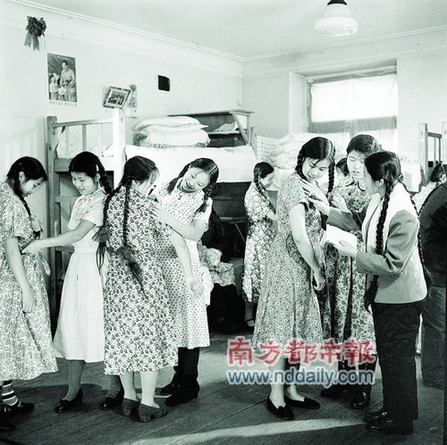

在2012年3月的第一周，曾经发生爆炸的车间原址上开始兴建一个高级住宅小区的三期工程，公交车已经不经过那里，黑夜里，那个小区已经盖起的高层顶部有香炉一样造型，每到夜里10点钟之前，那里一直亮着红色的灯光，远远看去，又好像竖着...  网页链接
网页链接
@鲸歌whalessong:
【你记得吗？ 】哈尔滨亚麻厂于1987年发生剧烈爆炸，死伤共235人，女性职工占80%。有的满面疤痕，有的双手炭化，有的乳房割去，有的一生未婚。烧伤女工住在被称做“鬼楼”的两座楼上，传说这里经常传出凄怨绝望的歌声，传说这两座楼里什么都有，但就是没有镜子… 网页链接
】哈尔滨亚麻厂于1987年发生剧烈爆炸，死伤共235人，女性职工占80%。有的满面疤痕，有的双手炭化，有的乳房割去，有的一生未婚。烧伤女工住在被称做“鬼楼”的两座楼上，传说这里经常传出凄怨绝望的歌声，传说这两座楼里什么都有，但就是没有镜子… 网页链接
- 